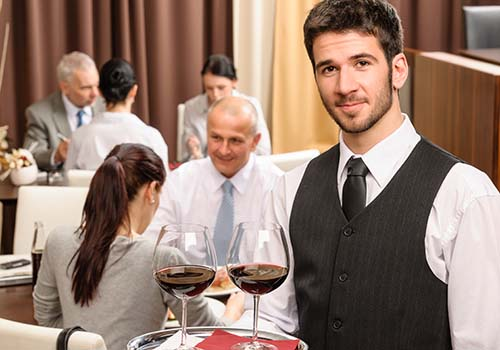

FoodGuru

O que é o FoodGuru?
O foodguru foi criado baseado na problemática de espera em um restaurante. O objetivo é eliminar a etapa de espera de um garçom e encurtar o tempo em que um pedido é feito. O aplicativo fornece dados para o estabelecimento, como: relatórios de vendas, avaliações de pratos. e para o cliente diz o tempo médio de espera do prato, os pratos mais bem avaliados, entre outros.
Praticidade
O cliente para fazer o pedido ao estabelecimento necessita apenas do seu celular, com um QRCode ele identifica a mesa em que está situado, possibilitando fazer qualquer pedido.
Eficiência
Já imaginou nunca mais precisar ficar chamando o garçom em um restaurante lotado e apenas esperar o prato chegar na sua mesa?